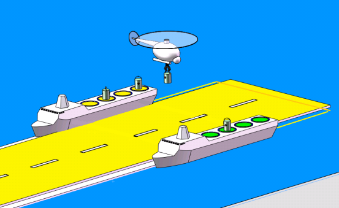
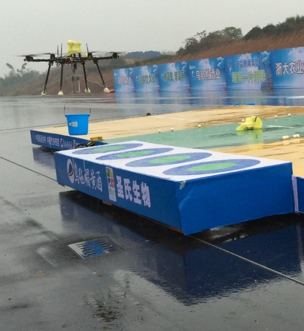
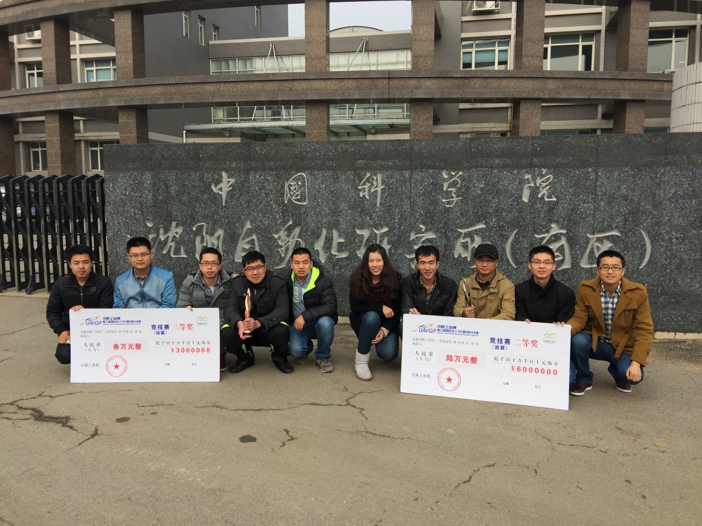

3rd International UAV Innovation Grand Prix
2015-11-03
Competition description
3rd International Unmanned Aerial Vehicle(UAV) Innovation Grand Prix (UAVGP) was sponsored by Aviation Industry Corporation of China (AVIC).
In rotary-wing UAV(JX) group, an autonomous barrel transportation mission was proposed for Rotary-wing UAV (RUAV) which aims at validating the feasibility of vertical replenishment by UAV.
The RUAV was required to autonomously takeoff, track the barrels on the supplier platform, pick-up the barrels, stack the barrels on the replenishment platform and then land at the same place where it took off. The supplier and replenish platform were in uniform motion with a speed under 2m/s, the weight of the barrels was between 1.5kg to 2kg and a total of four barrels were required to be picked up and stacked. The barrels should be stacked in a circle on the replenishment platform with the diameter being 0.5m, and the diameter of the barrel was 0.266m. A stacking accuracy should be under 0.15m to obtain the full mission score. The final score was determined based on the mission completion time and the stacking accuracy. A mission completion time under 200 seconds was supposed to be perfect.

Firstly, the unmanned aerial vehicle (UAV) is required to identify circle targets and the black and white id marker near the circle on one moving platform, then the UAV chosen a target bucket, tracked and transported it to the other moving platform, until all 4 buckets are transported from one moving platform to the other.

My group won the second prize.
